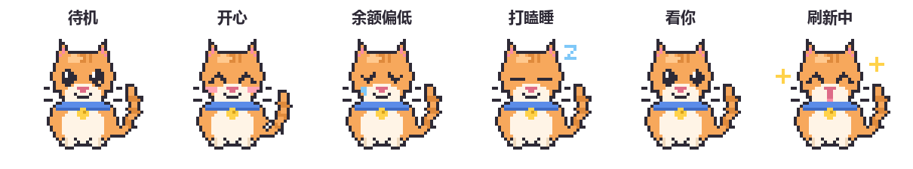

不是一张贴在桌面上的静态壁纸，而是一只有呼吸、会眨眼、能互动的活猫。
鼠标移上去就弹出气泡：总余额、赠送余额、充值余额、刷新倒计时，全部列出来。 默认 5 分钟自动刷新一次，最短可调到 20 秒。
低于你设定的阈值，小猫立刻垂下眼睛掉眼泪，气泡转为红色警告， 不用再手动去官网查还剩多少钱。
光标移到哪儿，它的视线就追到哪儿。点一下会冒出爱心开心一下， 双击立即刷新余额，会撒星星和金币。
透明背景、无边框、不进任务栏。透明区域的鼠标点击会穿透到下层窗口， 完全不会挡住你操作别的软件。
晾着不管几分钟，它就趴下打呼冒 ZZZ。动一下鼠标立刻醒来， 继续盯着你的余额。
API Key 只写进你本机的配置文件，只发给 api.deepseek.com 官方接口， 不经过任何第三方服务器，没有任何统计上报。
不是预录的 GIF —— 呼吸、摇尾巴、眨眼、耳朵抖动都是逐帧算出来的像素动画。

下载、双击、粘贴 Key。不需要装 Python，不需要管理员权限，不需要重启。
双击 DeepSeekPet-Setup，选好安装位置点「安装」。
装完会自动跳出小猫。
第一次运行会自动弹出设置面板，把 sk- 开头的 Key 贴进去，
点「测试连接」确认通了再保存。
按住小猫拖到屏幕任意角落，松手就自动记住。下次开机它还在原地。
两个版本功能完全一样，按你的习惯挑一个就行。
带图形安装向导，自动创建桌面和开始菜单快捷方式， 并且会注册到「设置 → 应用」里，以后想卸载点一下就行。
整个文件夹解压到任何位置，双击里面的程序就能跑。不写注册表、 不建快捷方式、不进「设置 → 应用」，想删直接删文件夹。
| 操作系统 | Windows 10 / 11（64 位） |
|---|---|
| 运行环境 | 不需要。Python 运行时已打包进 exe，双击即用 |
| 权限 | 不需要管理员权限，装在当前用户目录 |
| 磁盘占用 | 约 12 MB（安装版）；运行时内存约 40 MB |
| 网络 | 需要能访问 api.deepseek.com（仅用于查询余额） |
| 卸载 | 设置 → 应用 → 找到「DeepSeek 余额桌面宠物」→ 卸载 |
不需要。安装包里已经内置了完整的 Python 运行时和图形界面库， 双击就能跑。这也是为什么安装程序有 20 MB。
不会。Key 只写进你本机的配置文件（安装版在 %APPDATA%\DeepSeekPet\config.json），
程序只会把它发给你自己填的 DeepSeek 官方接口 api.deepseek.com 用于查询余额。
程序里没有任何统计、上报、更新检查一类的联网行为。
右键小猫 →「打开配置文件夹」可以直接看到那个文件。
这是 PyInstaller 打包的 exe 常见的误报：因为它把 Python 运行时塞进了单个文件， 运行时会在临时目录解包自己，这个行为跟某些恶意软件的特征相似，所以启发式引擎容易误判。 遇到这种情况，直接改用免安装便携版即可 —— 它是普通文件夹形式， 运行时不需要自解包，几乎不会被误报。也可以把文件传到 VirusTotal 上核对， 或者使用项目源码（不到 1000 行 Python，全部是标准库，零第三方依赖）。
少数情况下安全软件会拦住安装程序在临时目录解包自己。换成免安装便携版就好：
解压后直接运行文件夹里的 DeepSeek桌面宠物.exe，效果完全一样，
只是需要你自己把它拖到桌面建快捷方式。
DeepSeek 的余额分「赠送余额」和「充值余额」两部分，气泡第二行两个都列出来了。 另外赠送额度是有有效期的，过期会被扣掉，最终以官网为准。
右键小猫 →「退出」。它故意不显示在任务栏里（这样才像一只真的趴在桌面上的猫）， 所以只能通过右键菜单关闭。如果开了开机自启又找不到猫， 运行一次程序，然后在右键菜单里取消勾选「开机自动启动」。
默认 5 分钟一次，每次只是一个几百字节的 HTTP 请求，一个月下来流量可以忽略不计。 如果嫌不够实时，设置里最短可以调到 20 秒。
空闲时约占单核 9%，内存约 40 MB。为了达到这个数字做过专门优化： 姿态量化成离散帧 + 缓存，画面没变化时一次绘制调用都不发。